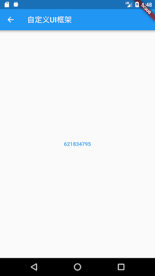

14.2 Element与BuildContext¶
14.2.1 Element¶
在“Widget简介”一节，我们介绍了Widget和Element的关系，我们知道最终的UI树其实是由一个个独立的Element节点构成。我们也说过组件最终的Layout、渲染都是通过RenderObject来完成的，从创建到渲染的大体流程是：根据Widget生成Element，然后创建相应的RenderObject并关联到Element.renderObject属性上，最后再通过RenderObject来完成布局排列和绘制。
Element就是Widget在UI树具体位置的一个实例化对象，大多数Element只有唯一的renderObject，但还有一些Element会有多个子节点，如继承自RenderObjectElement的一些类，比如MultiChildRenderObjectElement。最终所有Element的RenderObject构成一棵树，我们称之为”Render Tree“即”渲染树“。总结一下，我们可以认为Flutter的UI系统包含三棵树：Widget树、Element树、渲染树。他们的依赖关系是：Element树根据Widget树生成，而渲染树又依赖于Element树，如图14-0所示。

现在我们重点看一下Element，Element的生命周期如下：
Framework 调用
Widget.createElement创建一个Element实例，记为elementFramework 调用
element.mount(parentElement,newSlot)，mount方法中首先调用element所对应Widget的createRenderObject方法创建与element相关联的RenderObject对象，然后调用element.attachRenderObject方法将element.renderObject添加到渲染树中插槽指定的位置（这一步不是必须的，一般发生在Element树结构发生变化时才需要重新attach）。插入到渲染树后的element就处于“active”状态，处于“active”状态后就可以显示在屏幕上了（可以隐藏）。当有父Widget的配置数据改变时，同时其
State.build返回的Widget结构与之前不同，此时就需要重新构建对应的Element树。为了进行Element复用，在Element重新构建前会先尝试是否可以复用旧树上相同位置的element，element节点在更新前都会调用其对应Widget的canUpdate方法，如果返回true，则复用旧Element，旧的Element会使用新Widget配置数据更新，反之则会创建一个新的Element。Widget.canUpdate主要是判断newWidget与oldWidget的runtimeType和key是否同时相等，如果同时相等就返回true，否则就会返回false。根据这个原理，当我们需要强制更新一个Widget时，可以通过指定不同的Key来避免复用。当有祖先Element决定要移除
element时（如Widget树结构发生了变化，导致element对应的Widget被移除），这时该祖先Element就会调用deactivateChild方法来移除它，移除后element.renderObject也会被从渲染树中移除，然后Framework会调用element.deactivate方法，这时element状态变为“inactive”状态。“inactive”态的element将不会再显示到屏幕。为了避免在一次动画执行过程中反复创建、移除某个特定element，“inactive”态的element在当前动画最后一帧结束前都会保留，如果在动画执行结束后它还未能重新变成“active”状态，Framework就会调用其
unmount方法将其彻底移除，这时element的状态为defunct,它将永远不会再被插入到树中。如果
element要重新插入到Element树的其它位置，如element或element的祖先拥有一个GlobalKey（用于全局复用元素），那么Framework会先将element从现有位置移除，然后再调用其activate方法，并将其renderObject重新attach到渲染树。
看完Element的生命周期，可能有些读者会有疑问，开发者会直接操作Element树吗？其实对于开发者来说，大多数情况下只需要关注Widget树就行，Flutter框架已经将对Widget树的操作映射到了Element树上，这可以极大的降低复杂度，提高开发效率。但是了解Element对理解整个Flutter UI框架是至关重要的，Flutter正是通过Element这个纽带将Widget和RenderObject关联起来，了解Element层不仅会帮助读者对Flutter UI框架有个清晰的认识，而且也会提高自己的抽象能力和设计能力。另外在有些时候，我们必须得直接使用Element对象来完成一些操作，比如获取主题Theme数据，具体细节将在下文介绍。
14.2.2 BuildContext¶
我们已经知道，StatelessWidget和StatefulWidget的build方法都会传一个BuildContext对象：
Widget build(BuildContext context) {}
我们也知道，在很多时候我们都需要使用这个context 做一些事，比如：
Theme.of(context) //获取主题
Navigator.push(context, route) //入栈新路由
Localizations.of(context, type) //获取Local
context.size //获取上下文大小
context.findRenderObject() //查找当前或最近的一个祖先RenderObject
那么BuildContext到底是什么呢，查看其定义，发现其是一个抽象接口类：
abstract class BuildContext {
...
}
那这个context对象对应的实现类到底是谁呢？我们顺藤摸瓜，发现build调用是发生在StatelessWidget和StatefulWidget对应的StatelessElement和StatefulElement的build方法中，以StatelessElement为例：
class StatelessElement extends ComponentElement {
...
@override
Widget build() => widget.build(this);
...
}
发现build传递的参数是this，很明显！这个BuildContext就是StatelessElement。同样，我们同样发现StatefulWidget的context是StatefulElement。但StatelessElement和StatefulElement本身并没有实现BuildContext接口，继续跟踪代码，发现它们间接继承自Element类，然后查看Element类定义，发现Element类果然实现了BuildContext接口:
class Element extends DiagnosticableTree implements BuildContext {
...
}
至此真相大白，BuildContext就是widget对应的Element，所以我们可以通过context在StatelessWidget和StatefulWidget的build方法中直接访问Element对象。我们获取主题数据的代码Theme.of(context)内部正是调用了Element的dependOnInheritedWidgetOfExactType()方法。
思考题：为什么build方法的参数不定义成Element对象，而要定义成BuildContext ?
进阶¶
我们可以看到Element是Flutter UI框架内部连接widget和RenderObject的纽带，大多数时候开发者只需要关注widget层即可，但是widget层有时候并不能完全屏蔽Element细节，所以Framework在StatelessWidget和StatefulWidget中通过build方法参数又将Element对象也传递给了开发者，这样一来，开发者便可以在需要时直接操作Element对象。那么现在笔者提两个问题，请读者先自己思考一下：
如果没有widget层，单靠
Element层是否可以搭建起一个可用的UI框架？如果可以应该是什么样子？Flutter UI框架能不做成响应式吗？
对于问题1，答案当然是肯定的，因为我们之前说过widget树只是Element树的映射，我们完全可以直接通过Element来搭建一个UI框架。下面举一个例子：
我们通过纯粹的Element来模拟一个StatefulWidget的功能，假设有一个页面，该页面有一个按钮，按钮的文本是一个9位数，点击一次按钮，则对9个数随机排一次序，代码如下：
class HomeView extends ComponentElement{
HomeView(Widget widget) : super(widget);
String text = "123456789";
@override
Widget build() {
Color primary=Theme.of(this).primaryColor; //1
return GestureDetector(
child: Center(
child: FlatButton(
child: Text(text, style: TextStyle(color: primary),),
onPressed: () {
var t = text.split("")..shuffle();
text = t.join();
markNeedsBuild(); //点击后将该Element标记为dirty，Element将会rebuild
},
),
),
);
}
}
上面
build方法不接收参数，这一点和在StatelessWidget和StatefulWidget中build(BuildContext)方法不同。代码中需要用到BuildContext的地方直接用this代替即可，如代码注释1处Theme.of(this)参数直接传this即可，因为当前对象本身就是Element实例。当
text发生改变时，我们调用markNeedsBuild()方法将当前Element标记为dirty即可，标记为dirty的Element会在下一帧中重建。实际上，State.setState()在内部也是调用的markNeedsBuild()方法。上面代码中build方法返回的仍然是一个widget，这是由于Flutter框架中已经有了widget这一层，并且组件库都已经是以widget的形式提供了，如果在Flutter框架中所有组件都像示例的
HomeView一样以Element形式提供，那么就可以用纯Element来构建UI了HomeView的build方法返回值类型就可以是Element了。
如果我们需要将上面代码在现有Flutter框架中跑起来，那么还是得提供一个“适配器”widget将HomeView结合到现有框架中，下面CustomHome就相当于“适配器”：
class CustomHome extends Widget {
@override
Element createElement() {
return HomeView(this);
}
}
现在就可以将CustomHome添加到widget树了，我们在一个新路由页创建它，最终效果如下如图14-1和14-2（点击后）所示：

点击按钮则按钮文本会随机排序。
对于问题2，答案当然也是肯定的，Flutter engine提供的dart API是原始且独立的，这个与操作系统提供的API类似，上层UI框架设计成什么样完全取决于设计者，完全可以将UI框架设计成Android风格或iOS风格，但这些事Google不会再去做，我们也没必要再去搞这一套，这是因为响应式的思想本身是很棒的，之所以提出这个问题，是因为笔者认为做与不做是一回事，但知道能不能做是另一回事，这能反映出我们对知识的理解程度。
总结¶
本节详细的介绍了Element的生命周期，以及它Widget、BuildContext的关系，也介绍了Element在Flutter UI系统中的角色和作用，我们将在下一节介绍Flutter UI系统中另一个重要的角色RenderObject。